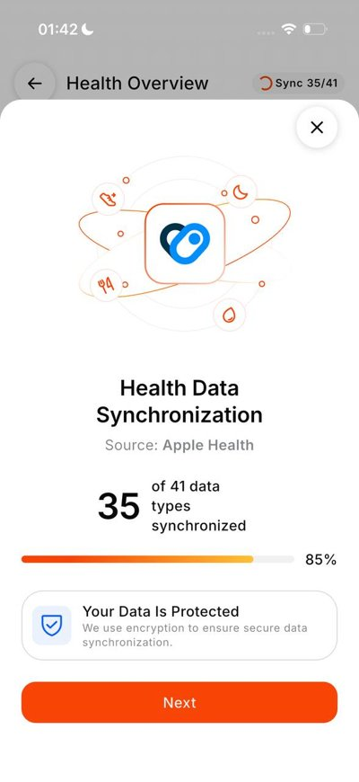
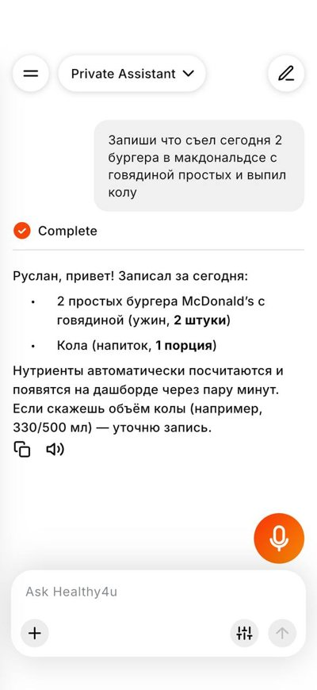
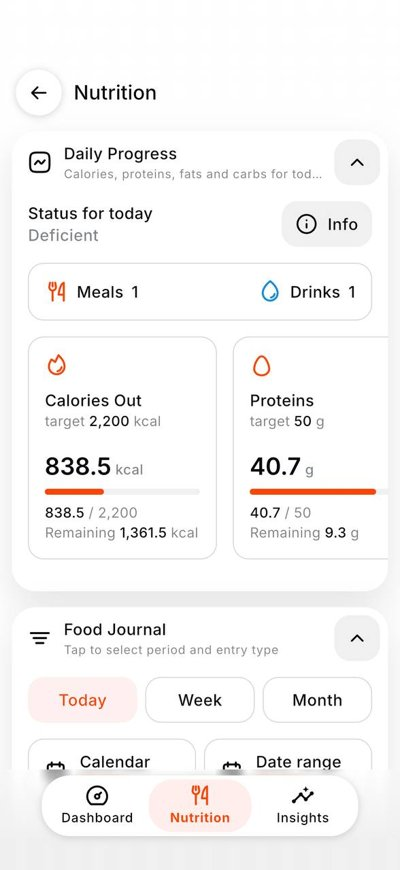
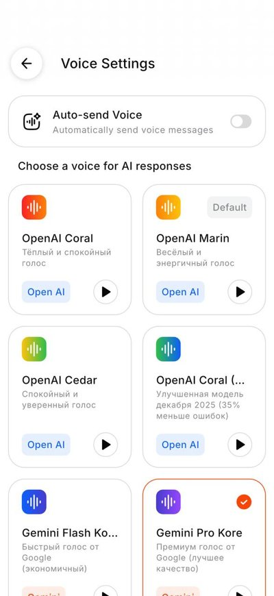

Healthy4u
مساعد صحي بالذكاء الاصطناعي
البيانات الصحية من الساعات الذكية: HealthKit (40+ نوعًا)، وHealth Connect، ونموذج أولي على watchOS باستخدام SwiftUI. اشتراكات أصلية عبر StoreKit 2 وGoogle Play Billing مع التحقق منها على الخادم بالتعاون مع مطوّر الواجهة الخلفية.



